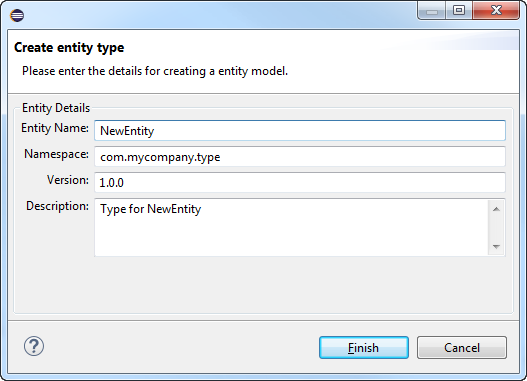
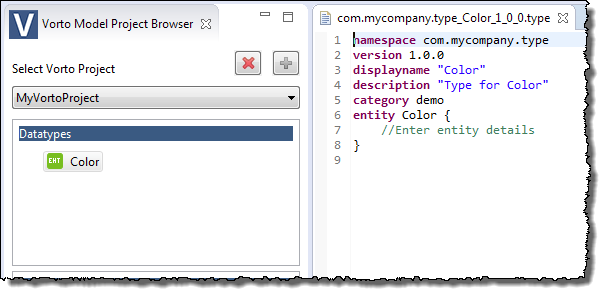

Defining a Data Type
This section details the following topics:
Data Types
A data type is a reusable entity that can be shared between function blocks.
Creating a New Data Type
Prerequisites
- You have started your IDE.
- You have selected the Vorto perspective.
Proceed as follows
-
Right-click in the Datatype Models tab and choose Create new Entity from the context menu, and the Create entity type dialog opens:

- Enter
Coloras Entity Name. -
Click on Finish.
The new data type (entity)Coloris created and the data type model DSL source file (Color.type) is generated.
Editing a Data Type
Prerequisites
You have created a data type (refer to Create a new Data Type).
Proceed as follows
- In the Datatype Models tab, click the data type entity you want to edit, e.g.,
Color.
The DSL editor for the fileColor.typeopens. - In the DSL editor, edit the entity according to your needs.
Example
namespace com.mycompany.type
version 1.0.0
entity Color{
mandatory r as int <MIN 0, MAX 255>
mandatory g as int <MIN 0, MAX 255>
mandatory b as int <MIN 0, MAX 255>
}